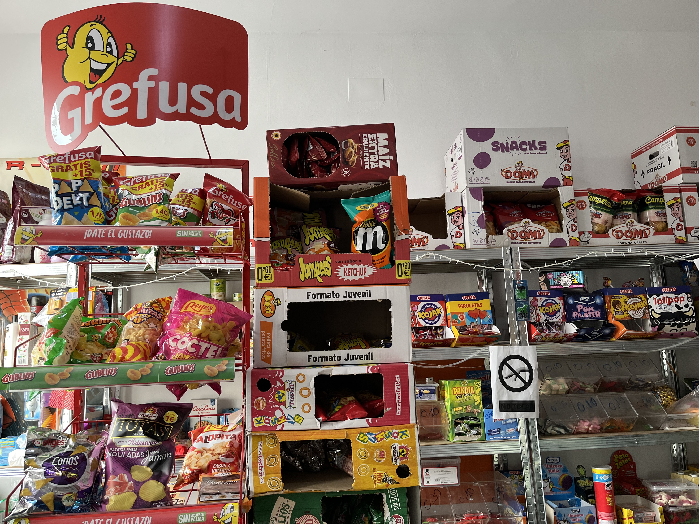
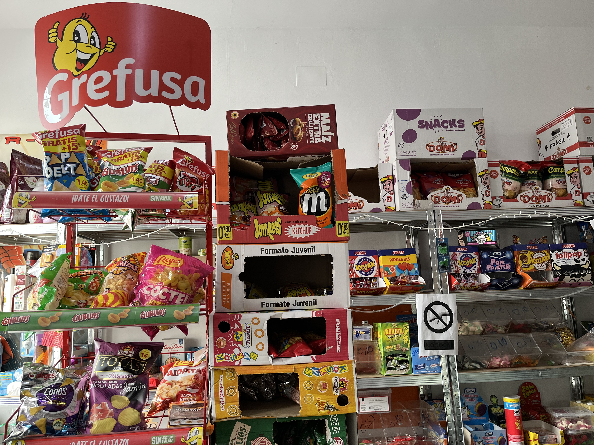

Información de la empresa
Dirección: Plaza San Pedro, 23170, La Guardia de Jaén.
Teléfono: 629 57 88 88
Horario de la tienda: Lunes: 9h-12h y Martes-Domingos: 9h a 14h
Horario de comida para llevar: Miércoles-Domingos: 20:30h a cierre y Sábados, Domingos y Festivos se sirven churros de 8h a 12h
Especialidad: Es conocido por su deliciosa comida para llevar y sus irresistibles churros. Ofrece todo tipo de comestibles y bebidas.

 
